代码组及其含义
“模态代码” 和 “一般” 代码
“形式代码” 的功能在它被执行后会继续维持，而 “一般代码”
仅仅在收到该命令时起作用。定义移动的代码通常是“模态代码”，像直线、圆弧和循环代码。反之，像原点返回代码就叫“一般代码”。
每一个代码都归属其各自的代码组。在“模态代码”里，当前的代码会被加载的同组代码替换。 |
代码组及其含义
“模态代码” 和 “一般” 代码
“形式代码” 的功能在它被执行后会继续维持，而 “一般代码” 仅仅在收到该命令时起作用。定义移动的代码通常是“模态代码”，像直线、圆弧和循环代码。反之，像原点返回代码就叫“一般代码”。
每一个代码都归属其各自的代码组。在“模态代码”里，当前的代码会被加载的同组代码替换。
| G代码 |
解释 |
G00 |
定位 (快速移动) |
G01 |
直线插补指令 |
G02/G03 |
圆弧插补指令 |
G04 |
延时指令 |
G28/G30 |
参考点指令 |
G40/G41/G42 |
刀具半径补偿指令 |
G22-G800 |
程序循环指令 |
G60 |
准确定位 |
G64 |
连续路径加工 |
G77 |
圆柱/圆锥内外径切削固定循环 |
G78 |
螺纹切削固定循环 |
G79 |
断面切削固定循环 |
G71 |
外圆粗车复合循环 |
G72 |
断面粗车复合循环 |
G173 |
复合型轮廓粗车复合循环 |
G174 |
排屑钻端面孔复合循环 |
G175 |
外径/内径钻孔/切槽复合循环 |
G176 |
螺纹切削复合循环 |
G33 |
螺纹加工指令 |
G96/G97 |
恒线速切削 |
G94/G95 |
每分/每转进给 |
G53―G59 |
选择坐标系指令 |
G20/G21 |
公英制转换指令 |
G26 |
返回程序起点指令 |
G84 |
右旋攻丝循环 |
G74 |
左旋攻丝循环 |
G52 |
局部坐标系指令 |
G17-G19 |
平面选择指令 |
支持参数与宏编程 |
|
|
刀具以快速移动速度移动到用绝对值指令或增量值指令指定的工件坐标系中的位置。
以绝对值指令编程时编制终点的坐标值；
以增量值指令编程时编制刀具移动的距离 。
指令格式：G00 X(U)- Z(W)- (模态)
说明：
X、Z：为绝对编程时，快速定位终点在工件坐标系中的坐标；
U、W：为增量编程时，快速定位终点相对于起点的位移量；
G00 指令刀具相对于工件以各轴预先设定的速度，从当前位置快速移动到程序段指令的定位目标点。
G00 指令中的快移速度由机床参数“快移进给速度”对各轴分别设定，不能用F 规定。
G00 一般用于加工前快速定位或加工后快速退刀。快移速度可由面板上的修调开关修正。
G00 为模态功能，可由G01、G02、G03 或G33 功能注销。
注意：在执行G00 指令时，联动直线轴的合成轨迹是直线。
|
用来单轴或二轴联动的插补加工切削。
指令格式：G01 X(U)- Z(W)- F- (模态，初态)
说明：X(U)，Z(W)坐标字表示运行轴，其数据指明进给量和方向，可以用增量编程或绝对编程。插补速度由程序中F字段指定。
刀具以F 指定的进给速度沿直线移动到指定的位置, F 指定的进给速度直到新的值被指定之前一直有效,因此无需对每个程序段都指定F,用F 代码指令的进给速度是沿着直线轨迹测量的,如果F 代码不指令进给速度为参数中的默认值。
旋转轴的进给速度以度/分为指令单位.当直线轴(例如X, Y 或Z )和旋转轴进行直线插补时,由F (mm/min )指令的速度是直角坐标系中的切线进给速度。
旋转轴进给速度的获得:首先计算分配需要的时间,然后轴进给速度单位变换为度/分。
X、Z：为绝对编程时终点在工件坐标系中的坐标；
U、W：为增量编程时终点相对于起点的位移量；
F_：合成进给速度。
G01 指令刀具以联动的方式，按F 规定的合成进给速度，从当前位置按线性路线(联动直线轴的合成轨迹为直线)移动到程序段指令的终点。
G01 是模态代码，可由G00、G02、G03 或G33 功能注销。
例5．如图所示，用直线插补指令编程。
N1 G92 X100 Z10 （设立坐标系，定义对刀点的位置）
N2 G00 X16 Z2 M03 （移到倒角延长线，Z 轴2mm 处）
N3 G01 U10 W-5 F300 （倒3×45°角）
N4 Z-48 （加工Φ26 外圆）
N5 U34 W-10 （切第一段锥）
N6 U20 Z-73 （切第二段锥）
N7 X90（退刀）
N8 G00 X100 Z10（回对刀点）
N9 M05（主轴停）
N10 M30（主程序结束并复位）
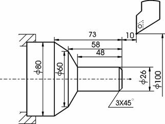
图1 G01编程实例
|
用来在指定平面上，进行G02顺圆(顺时针方向)或G03逆圆(逆时针方向)的圆弧插补切削。
指令格式：G02(G03) X(U)- Z(W)- K- I- (R-) F- ;ZX平面(模态)
说明：
G02/G03 指令刀具，按顺时针/逆时针进行圆弧加工。圆弧插补G02/G03 的判断，是在加工平面内，根据其插补时的旋转方向为顺时针/逆时针来区分的。加工平面为观察者迎着Y 轴的指向，所面对的平面。见下图：
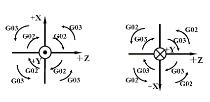
图2 G02/G03插补方向
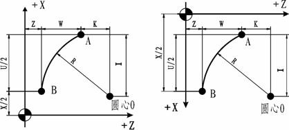
图3 G02/G03参数说明
G02： 顺时针圆弧插补(如图4.12 所示)；
G03： 逆时针圆弧插补(如图4.12 所示)；
X、 Z： 为绝对编程时，圆弧终点在工件坐标系中的坐标；
U、W： 为增量编程时，圆弧终点相对于圆弧起点的位移量；
I、 K：圆心相对于圆弧起点的增加量(等于圆心的坐标减去圆弧起点的坐标，如图4.13 所示) ，在绝对、增量编程时都是以增量方式指定，在直径、半径编程时I 都是半径值；
R： 圆弧半径,当圆弧角度大于180°时R用负值表示；
F： 被编程的两个轴的合成进给速度；
注意：顺时针或逆时针是从垂直于圆弧所在平面的坐标轴的正方向看到的回转方向。
例7．如图所示，用圆弧插补指令编程。
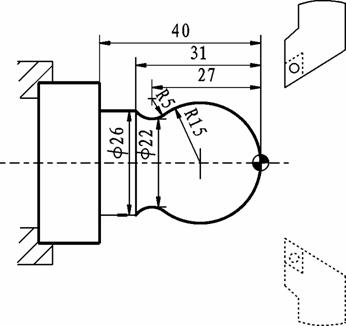
图4 G02/G03编程实例
N1 G92 X40 Z5 （设立坐标系，定义对刀点的位置）
N2 M03 S400 （主轴以400r/min 旋转）
N3 G00 X0 （到达工件中心）
N4 G01 Z0 F60 （工进接触工件毛坯）
N5 G03 U24 W-24 R15 （加工R15 圆弧段）
N6 G02 X26 Z-31 R5 （加工R5 圆弧段）
N7 G01 Z-40 （加工Φ26 外圆）
N8 X40 Z5 （回对刀点）
N9 M30 （主轴停、主程序结束并复位）
|
用来在加工过程中因加工工艺需要，延时一定时间再执行其它动作。
指令格式：G04 P－
P后的数值单位为秒，表延时时间长度。
|
返回参考点指刀具沿着指定轴自动地移动到参考点。
指令格式：G28;XZ轴返回第一参考点。
G281 ;仅X轴返回第一参考点。
G282 ;仅Y轴返回第一参考点。
G283 ;仅Z轴返回第一参考点。
G30 P2;XYZA轴返回第二参考点(P2可省去)。
G30 P3;XYZA轴返回第三参考点。
G30 P4;XYZA轴返回第四参考点。
G301 P2;仅X轴返回第二参考点(P2可省去)。
G301 P3;仅X轴返回第三参考点。
G301 P4;仅X轴返回第四参考点。
G302 P2;仅Y轴返回第二参考点(P2可省去)。
G302 P3;仅Y轴返回第三参考点。
G302 P4;仅Y轴返回第四参考点。
G303 P2;仅Z轴返回第二参考点(P2可省去)。
G303 P3;仅Z轴返回第三参考点。
G303 P4;仅Z轴返回第四参考点。 |
说明：
返回第一参考点G28的顺序为X -> Z。
返回第 2，3，4参考点G30时，各轴的返回顺序为：若X轴向正方向运动，则先返回X轴，再返回Z轴；若X轴向负方向运动，则先返回Z轴，再返回X轴；最后返回其余各轴，依次按Y->A轴的顺序返回。
注意：执行该指令之前应该清除刀具半径补偿和刀具长度补偿
|
指令格式：G40 (模态，初态);刀具半径补偿取消。
�� G41 T－ (模态);刀具在工件左侧偏置的刀具
半径补偿。
G42 T－ (模态);刀具在工件右侧偏置的刀具
半径补偿。
?说明：G41/G42中的左侧或右侧是指沿切削方向看，刀具在工件的左侧或右侧。刀具半径值用当前刀具号的D1-D4调用。执行偏置是在G41/G42所在程序行开始。尖角处由系统自动产生过渡直线，使上一程序段终点的刀具半径偏移矢量过渡到下一程序段的起点的刀具半径偏移矢量、刀偏矢量是描述刀具偏移的数值和方向的方法。它的矢径为刀具半径。对于圆弧来说它的方向在半径方向。对于直线来说它的方向在直线的垂直方向。
数控程序一般是针对刀具上的某一点即刀位点，按工件轮廓尺寸编制的。车刀的刀位点一般为理想状态下的假想刀尖A 点或刀尖圆弧圆心O 点。但实际加工中的车刀，由于工艺或其他要求，刀尖往往不是一理想点，而是一段圆弧。当切削加工时刀具切削点在刀尖圆弧上变动；造成实际切削点与刀位点之间的位置有偏差，故造成过切或少切。这种由于刀尖不是一理想点而是一段圆弧，造成的加工误差，可用刀尖园弧半径补偿功能来消除。刀尖园弧半径补偿是通过G41、G42、G40 代码及T 代码指定的刀尖园弧半径补偿号，加入或取消半径补偿。
G40：取消刀尖半径补偿；
G41：左刀补(在刀具前进方向左侧补偿)，如图所示；
G42：右刀补(在刀具前进方向右侧补偿)，如图所示；
X, Z：G00/G01 的参数，即建立刀补或取消刀补的终点；
注意：G40、G41、G42 都是模态代码，可相互注销。
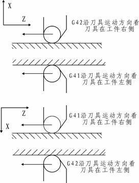
图5 左刀补和右刀补
注意：
(1) G41/G42 不带参数，其补偿号(代表所用刀具对应的刀尖半径补偿值)由T 代码指定。其刀尖圆弧补偿号与刀具偏置补偿号对应。
(2) 刀尖半径补偿的建立与取消只能用G00 或G01 指令，不得是G02 或G03。
刀尖圆弧半径补偿参数D1-D4中，定义了车刀圆弧半径；假想刀尖号定义了的刀尖方向。
车刀刀尖的假想刀尖号定义了刀具刀位点与刀尖圆弧中心的位置关系，其从0-9 有十个方向，如图所示。
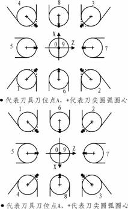
图6 车刀刀尖位置码定义
例：考虑刀尖半径补偿，编制图所示零件的加工程序
图7刀尖圆弧半径补偿编程实例
N1 T0101 （换一号刀，确定其坐标系）
N2 M03 S400 （主轴以400r/min 正转）
N3 G00 X40 Z5 （到程序起点位置）
N4 G00 G42 X0 （加入刀具园弧半径补偿，刀具移到工件中心）
N5 G01 Z0 F60（工件接触工件）
N6 G03 U24 W-24 R15 （加工R15 圆弧段）
N7 G02 X26 Z-31 R5 （加工R5 圆弧段）
N8 G01 Z-40 （加工Φ26 外圆）
N9 G00 X30 （退出已加工表面）
N10 G40 X40 Z5 （取消半径补偿，返回程序起点位置）
N11 M30 （主轴停、主程序结束并复位）
注意：
1),刀具半径C补偿的建立和撤消方式分为A型与B型，可在其余参数中的68(建立方式)、69(撤消方式)号参数设置。具体方式见后图示。
2),刀具半径补偿的建立和撤消必须在直线段进行。
|
| |
|
用来编制具有重复动作和重复运动走向的加工程序
指令格式：G22 L2;循环体开始
：
：;循环体
G800 ;循环体结束
说明：G22和G800在程序中必须成对使用，在G22和G800之间可以嵌套，可以子程序调用，循环次数由L2字段指定。G22和G800指令是独立指令。G22到G800之间，编写需要重复运行的程序段组成的循环体，运行时将重复运行循环体程序的内容。
|
| |
根据加工工艺的要求，可以通过G60/G64指令指定程序段之间的连接方式。
指令格式：G60 ; 准确定位(模态)
G64 ; 连续路径加工（模态，初态）
|
格式：G77 X(U)_ Z(W)_ I_ F_
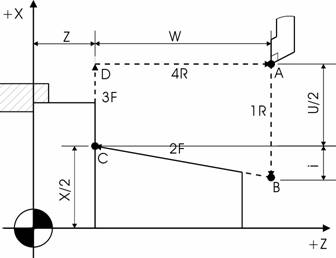
图8
X 、Z：绝对值编程时，为切削终点C 在工件坐标系下的坐标；U、W：增量值编程时，为切削终点C 相对于循环起点A的有向距离，图形中用U、W 表示。I：为切削起点B 的半径减去切削终点C 的半径的差值, 不指定I则表示I为0，即圆柱内（外）径切削循环，其符号为差的符号(无论是绝对值编程还是增量值编程)。该指令执行如图所示A→B→C→D→A 的轨迹动作。
R表G00快速移动；F表按G01移动。
|
格式：G78 X(U)_ Z(W)_ I_ J_ Q_ K(E)_ L(SP)_
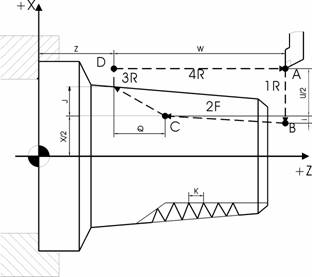
图9
说明：X 、Z：绝对值编程时，为螺纹终点C 在工件坐标系下的坐标；
U、W：增量值编程时，为螺纹终点C 相对于循环起点A的有向距离，图形中用U、W 表示。
I：为螺纹起点B 的半径减去螺纹终点C 的半径的差值,其符号为差的符号(无论是绝对值编程还是增量值编程), 不指定I则表示I为0；
J, Q：螺纹切削的退尾量，J、Q 均为相对于C点的向量，J 为X 向回退量；Q 为Z 向回退量，J、Q 可以省略，表示不用回退功能；该指令执行图示A→B→C→D→A 的轨迹动作。
K（E）：导程
SP：主轴起刀角度
注意：
1）, Z 向回退量Q为无符号数，方向由系统自动处理；X 向回退量J为正表示加工外螺纹，向X正向退出, J为负表示加工内螺纹，向X负向退出。
2），G78为模态，直到被G功能组中的其他指令(G0,G1,G2,G3等)取代为止。
3），右旋螺纹和左旋螺纹由主轴旋转方向M03/M04确定，在地址S下编程主轴转速。
4），G78中在加工螺纹时坐标轴速度由主轴转速和螺距确定，而与进给速度F值没有关系。系统自动将坐标轴速度限制在最大进给速度之内。
5），加工螺纹时(跟踪方式)，主轴倍率开关和进给轴倍率开关无效。
6），加工螺纹时(跟踪方式)，暂停功能无效。
7), L用于加工多头螺纹时指定头数。当指定L时，SP无效。L为模态。
8), SP用于加工多头螺纹时指定起刀角度，单位为度。不指定SP则表示SP为0。SP为模态。
9），宏变量#124指定G78指令的X轴半径下刀量，单位为毫米，正表示加工外螺纹，负表示加工内螺纹。
10），宏变量#125指定G78指令的Z轴下刀量，单位为毫米，为无符号数，方向由系统自动处理。
? 当宏变量#124，#125小于0.1mm时，系统不进行下刀处理。
例：
M03 S800
G00 G54X30Z40
G78 X10 Z20 K5
11）最大螺纹导程尺寸，应参照下公式：
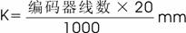
|
格式：G79 X(U)_ Z(W)_ K_ F_
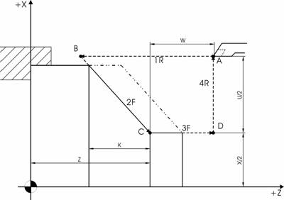
图10
X、Z：绝对值编程时，为切削终点C 在工件坐标系下的坐标；
U、W: 增量值编程时，为切削终点C 相对于循环起点A的有向距离，图形中用U、W 表示。
K：为切削起点B 相对于切削终点C 的Z 向有向距离。
该指令执行如图所示A→B→C→D→A 的轨迹动作。
R表G00快速移动；F表按G01移动。
|
格式：G71 L_ Q_ R_ I_ K_ F_ S_ T_
其中：
L― 描述最终轨迹的程序段数量（不包括自身， 从当前段的下一段开始）。范围: 1―99。
Q― X轴方向每次进刀量，半径值表示，无符号数。
R― X轴方向每次退刀量，半径值表示，无符号数。
I― X轴方向精加工余量, 直径值/半径值表示，无符号数。
K― Z轴方向精加工余量，无符号数。
F― 切削进给速度。
S― 主轴转速。
T― 刀具。
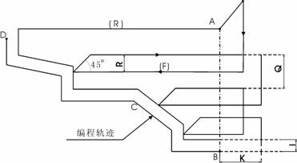
图11
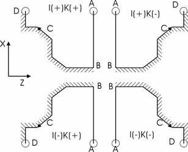
图12
注意：
1)：用G71指令切削的形状有四种情况(如图所示)，但无论哪一种都是根据刀具平行Z轴移动切削的。
2)：在描述A到B的程序段中只可以有 G01, G02, G03指令，但必须保证X与Z的尺寸数据都是单纯的增大或减小。
3)：在A到B的程序段中不能调用子程序。
4)：G71指令后应紧跟精车循环的切削指令。
5)：X轴方向精加工余量I与当前编程方式有关，直径编程时表直径余量，半径编程时表半径余量。
6)：指令中的地址Q、 R、 I、K均为无符号数，进刀退刀方向由系统自动确定。
7)：指令中的地址Q、 R、 I、K若没有指定时， 则按附加参数确定。
8)：指令中的地址Q、 R、 I、K为非模态。
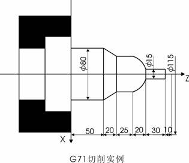
图13
例：
切削如图所示形状，棒料Φ82，每次进刀4mm，退刀2.5mm，切削速度 60mm/min 。
Ｇ０ Ｘ１１５ Ｚ１５５ ；定位到起始点
Ｍ３ Ｓ０２ ；开主轴，置主轴高速
Ｍ８ ；开冷却液
Ｇ０ Ｘ８３ ；X进刀靠近工件
Ｇ７１ Q４ R２.５ Ｌ７ Ｆ６０ ；定义粗车循环参数
Ｇ１ Ｚ１４５ ；
Ｘ１５ ；
Ｗ－３０ ；
Ｇ２ Ｘ５５ Ｗ－２０ Ｉ０ Ｋ－２０ ；
Ｇ１ Ｗ－２５ ；
Ｇ１ Ｘ８０ Ｗ－２０ ；
Ｗ－５０ ； 定 义 最 终 轨 迹
Ｇ０ Ｘ１１５ Ｚ１５５ ；返回刀具起点
Ｍ５ ；关主轴
Ｍ９ ；关冷却液
Ｍ２ ；程序结束
|
格式：G72 L_ Q_ R_ I_ K_ F_ S_ T_
其中：
L― 描述最终轨迹的程序段数量（不包括自身， 从当前段的下一段开始）。范围: 1―99
Q― Z轴方向每次进刀量，无符号数。
R― Z轴方向每次退刀量，无符号数。
I― X轴方向精加工余量, 直径值/半径值表示，无符号数。
K― Z轴方向精加工余量，无符号数。
F― 切削进给速度。
S― 主轴转速。
T― 刀具。
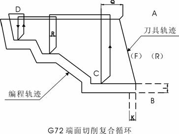
图14
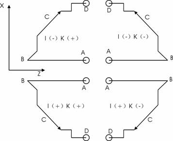
图15
注意：
1）：G72指令是根据刀具平行于X轴切削的。
2）：在描述最终轨迹的程序段中X、Z的尺寸数据只能单纯的增大或减小。
3）：其它注意事项同G71。
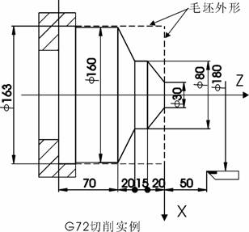
图16
例：
切削图所示形状，棒料Ф163，每次进刀5mm, 每次退刀3mm, 切削速度80mm/min。
Ｇ０ Ｘ１８０ Ｚ５０ ；定位到起始点
Ｍ３ Ｓ０２ ；开主轴，置主轴速度2
Ｍ８ ；开冷却液
Ｇ０ Ｘ１６5 Ｚ５；进刀靠近工件
Ｇ７２ Q５ R３ Ｌ6 Ｆ８０ ?；定义粗车循环参数
Ｇ１ Ｘ１６０ ；
Z－５５ ；
Ｘ８０ Ｚ-3 5 ；
Ｚ-2 0 ；
Ｘ３０ Ｚ 0 ；
Ｘ０ ；定义最终轨迹
Ｇ０ Ｚ 5 0 ；Z轴回加工起点
Ｘ１８０ ；X轴回加工起点
Ｍ５ ；关主轴
Ｍ９ ；关冷却液
Ｍ２；程序结束
|
格式：G173 L_ Q_ R_ P_ I_ K_ F_ S_ T_
说明：
该功能在切削工件时刀具轨迹为封闭回路，刀具逐渐进给，使封闭切削回路逐渐向零件最终形状靠近，最终切削成工件的形状，其精加工路径为Ａ->Ｂ->C->D的轨迹。 这种指令能对铸造、锻造等粗加工中已初步成型的工件，进行高效率切削。 其中：
Q― X轴方向的粗加工总余量，半径值表示，无符号数，非模态；
R― Z轴方向的粗加工总余量，无符号数，非模态；
L― 精加工程序段数，非模态；
P― 粗切削次数,没指定时由附加参数决定，非模态；
I― X方向精加工余量，直径值/半径值表示，无符号数,没指定时由附加参数决定， 非模态。X轴方向精加工余量I与当前编程方式有关，直径编程时表直径余量，半径编程时表半径余量。
K― Z方向精加工余量，无符号数,没指定时由附加参数决定，非模态；
F― 粗加工时G173中编程的F有效，而精加工时处于精加工程序段内的F有效。
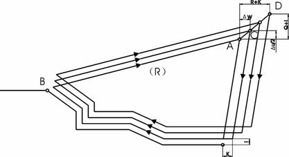
图17
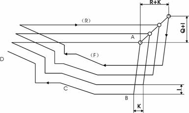
图18
例：（直径编程）
G00 X540 Z390
G173 Q440 R60 L6 P20 I0.6 K0.3 F2400
G00 X80 Z370
G01 X80 Z270 F240
G01 X150 Z140
G02 X350 Z40 I200 K0
G01 X400 Z20
G01 X520 Z00
G00 X540 Z390
M02
|
格式：G174 X(U)_ Z(W)_ Q_ R_ I_ J_ F_ P_
其中：X（U）Z（W）―孔底坐标。省略X为深孔钻循环。
Q―每次Z轴进刀量（Z轴），无符号数, 没指定时由附加参数决定， 非模态。
R―每次Z轴退刀量（Z轴），无符号数, 没指定时由附加参数决定， 非模态。
I―在X轴方向每次的移动量（半径值）。
J―在X轴方向每次的退刀量（半径值）。
F―进刀速度。
P―孔底暂停时间，单位为秒。
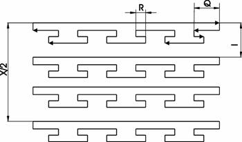
图19
G174端面深孔加工循环执行过程：
1）． Z轴以F速度进给Q的距离。
2）． Z轴快速退R的距离。
3）． Z轴以F速度进给Q+R的距离。
4）． 重复2～3的过程直到Z轴进给到B点。
5）． Z轴快速退到A点。
6）． 如X不为零，则X轴快速偏移I的距离。
7）． 重复1～4的过程直到X轴进给到C点，Z轴进给到B点。
8）． Z轴快速返回C点，X轴快速返回A点。
注：
1, 当I=0时，X轴方向的退刀量J应有符号。
2, G174循环结束后刀具仍在循环起始点。
|
格式：G175 X(U)_ Z(W)_ Q_ R_ I_ J_ F_ P_
其中：
X（U）Z（W）―槽终点坐标。省略Z为切断循环。
Q―每次X轴进刀量（半径值），无符号数, 没指定时由附加参数决定，非模态。
R―每次X轴退刀量（半径值），无符号数, 没指定时由附加参数决定，非模态。
I―在Z轴方向每次的移动量。
J―在Z轴方向每次的退刀量。
F―进刀速度。
P―孔底暂停时间，单位为秒。
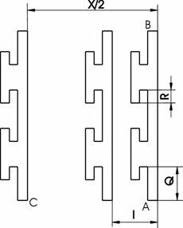
图20
G175切槽循环执行过程：
1）. X轴以F速度进给Q的距离。
2）. X轴快速退R的距离。
3）. X轴以F速度进给Q+R的距离。
4）. 重复2～3的过程直到X轴进给到B点。
5）. X轴快速退到A点。
6）. 如Z不为零，则Z轴快速偏移I的距离。
7）. 重复1～4的过程直到Z轴进给到C点，X轴进给到B点。
8）. X轴快速返回C点，Z轴快速返回A点。
G175循环结束后刀具仍在循环起始点。
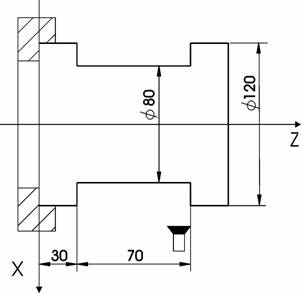
图21
N0010 G0 X125 Z100 ；定位到起始点；
N0020 G175 X80 Z35 Q6 R2 I5 F150；切槽循环，终点尺寸应加上刀具宽度。
|
格式：G176 P(m_r_a_)_R_ X(U)_ Z(W)_ I_ J_ Q_ K(E)_ SP_
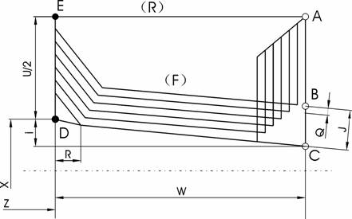
图22
1），P(m_r_a_)
m ：精加工重复次数(1--99), 没指定时由附加参数决定，非模态。
r ：倒角量：当螺距由K表示时可以从0.1K到9.9K，设定单位为0.1K(两位数从00 到99),没指定时由附加参数决定，非模态。
a： 刀尖角度可以选择0---180, 由2位数规定, 没指定时由附加参数决定， 非模态。
M，r 和a用地址P 同时指定
例： 当m=2,r=1.2K ,a=60 指定如下(K是螺距)
P? m/02? r/12 a/60
2），R 精加工余量
没指定时由附加参数决定，非模态。
3），I 螺纹半径差如果I=0, 可以进行普通直螺纹切削(半径值)。
4）, J 螺纹高度(半径值)。
5），Q 第一刀切削深度(半径值)。
6），K(E)导程。
7），SP主轴起刀角度。
8），最小切深(用半径值指定) 由附加参数决定。
9），最大螺纹导程尺寸，应参照下公式：

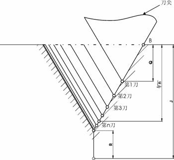
图23
|
指令格式：G33 Z_ X_ K(E)_ I_ SP_;模态指令
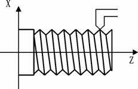
图24
本指令为螺纹一次性加工，即螺纹加工指令执行完成后停在终点，由其它G指令将其退出。适用于有退刀槽的螺纹加工。也可用于变螺距螺纹（指定变螺距的增量）、连续螺纹（连续的多段G33指令）的加工。
I 指定变螺距的增量。
K 表示公制螺纹的导程。
E 表示英制螺纹英寸螺纹的牙数。
SP 偏移角度（单位：度），可用于多头加工时指定偏移角度。
螺纹加工指令能切削等导程的圆柱内，外螺纹。前提条件为主轴必须具有位置检测反馈装置或者主轴具有位置伺服控制功能。
说明：
1），G33为模态，直到被G功能组中的其他指令(G0,G1,G2,G3等)取代为止。
2），右旋螺纹和左旋螺纹由主轴旋转方向M03/M04确定（M03-右旋，
M04-左旋），在地址S下编程主轴转速。
3），G33中在加工螺纹时坐标轴速度由主轴转速和螺距确定，而与进给速度F值没有关系。系统自动将坐标轴速度限制在最大进给速度之内。
4），加工螺纹时，主轴倍率开关和进给轴倍率开关无效。
5），在每一螺纹加工程序段都应指定螺纹导程K值，否则，无法通过编译。
6），当为位置伺服控制方式时，螺纹导程K为负值表主轴反转。
7），加工螺纹时，暂停功能无效。
8），对于英制螺纹加工，用E指定每英寸螺纹的牙数。
示例:
加工螺距为0.8mm的螺纹
N10 G54 G0 G90 X10 Y10 Z5 S600 M3;回起始点，主轴右转
?N20 G33 Z-25 K0.8 ;加工螺纹，终点-25毫米
N40 G0 X… Z…
9），最大螺纹导程尺寸，应参照下公式：

变螺距螺纹切削
在G33指令中用I指定变螺距的增量，即对每一螺距指令一个增加值（I为正值）或减少值（（I为正值））就能完成变螺距螺纹切削。
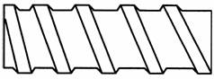
图25变螺距螺纹
示例:
加工起点螺距为0.8mm，增量为0.1mm的螺纹
G91 G33 Z-25 K0.8 I0.1; 加工螺纹，25毫米长。
连续螺纹切削
连续的多段G33指令可实现连续螺纹的加工。
说明：1、连续轨迹必须是直线形式，如下图。
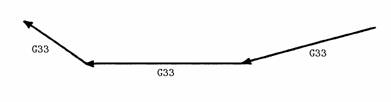
图26
2、连续螺纹也可实现多头，变螺距功能。
示例:
加工三段螺距均为0.8mm的螺纹
G91 G33 Z-25 K0.8 ; 加工第一段螺纹，25mm直螺纹。
G33 Z-20 X10 K0.8 ; 加工第二段螺纹，20mm锥螺纹。
G33 Z-20 X5 K0.8 ; 加工第三段螺纹，20mm锥螺纹。
|
前提条件为主轴驱动必须具有位置伺服控制功能。
该循环执行左旋攻丝，在左旋攻丝循环中，当到达孔底时主轴顺时针旋转。
指令格式：G7４ X-Z-R-Ｐ-K-S-L- ;
X-:孔位数据
Z-:从R点到孔底的距离(G91)或坐标值(G90)
R-:从初始点到R点的距离(G91)或坐标值(G90)
P-:暂停时间
K-:螺纹导程
S-:主轴转速
L-:重复次数
说明：
该指令为模态，用G80指令撤销。
在加工螺纹时坐标轴速度由主轴转速和螺距确定，而与进给速度F值没有关系。系统自动将坐标轴速度限制在最大进给速度之内。??
在每一螺纹加工程序段都应指定螺纹导程K值，否则，无法通过编译。
用主轴逆时针旋转执行攻丝。当到达孔底时，为了退回主轴顺时针旋转。该循环加工一个反螺纹。
在指定G74之前使用辅助功能M 代码使主轴逆时针旋转。当主轴为脉冲控制方式时，不需用辅助功能M 代码旋转主轴。
刀具半径偏置被忽略。
示例：
M4 S100；主轴开始旋转
G90 G74 X300 Z-150 ?R-100 ?K5 S100
；定位, 攻丝1孔, 然后返回到R点
X-550 K5 ; 定位, 攻丝2孔, 然后返回到R点
X-750 K5 ; 定位, 攻丝3孔, 然后返回到R点
X1000 K5 ; 定位, 攻丝4孔, 然后返回到R点
X-550 K5 ; 定位, 攻丝5孔, 然后返回到R点
G80
M5 ; 主轴停止旋转
|
前提条件为主轴驱动必须具有位置伺服控制功能。
在这个攻丝循环中,当到达孔底时主轴以反方向旋转
指令格式：G84 X-Z-R-Ｐ-K-L- ;
X-:孔位数据
Z-:从R点到孔底的距离(G91)或坐标值(G90)
R-:从初始点到R点的距离(G91)或坐标值(G90)
P-:暂停时间
K-:螺纹导程
S-:主轴转速
L-:重复次数
说明：
该指令为模态，用G80指令撤销。
在加工螺纹时坐标轴速度由主轴转速和螺距确定，而与进给速度F值没有关系。系统自动将坐标轴速度限制在最大进给速度之内。??
在每一螺纹加工程序段都应指定螺纹导程K值，否则，无法通过编译。
主轴顺时针旋转执行攻丝。当到达孔底时，为了回退，主轴以相反方向旋转，这个过程生成螺纹。
在指定G84之前，用辅助功能M 代码旋转主轴。当主轴为脉冲控制方式时，不需用辅助功能M 代码旋转主轴。
刀具半径偏置被忽略。
示例：
M3 S100 ；主轴开始旋转
G90 G84 X300 Z-150 R-120 P300 K5 S100
；定位, 攻丝1孔, 然后返回到R点
X-550 K5 ; 定位, 攻丝2孔, 然后返回到R点
X-750 K5 ; 定位, 攻丝3孔, 然后返回到R点
X1000 K5 ; 定位, 攻丝4孔, 然后返回到R点
X-550 K5 ; 定位, 攻丝5孔, 然后返回到R点
G80
M5 ; 主轴停止旋转
|